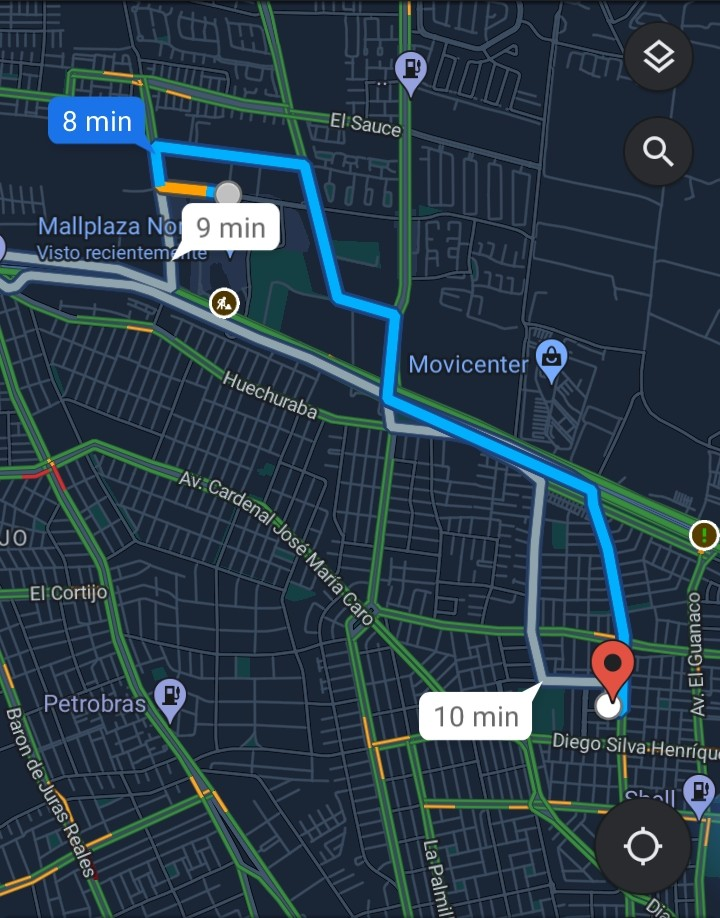

<ion-header class="ion-no-border">
  <ion-toolbar color="secondary">
    <ion-buttons slot="start">
      <ion-back-button text=""></ion-back-button>
    </ion-buttons>
  </ion-toolbar>
</ion-header>

<ion-content color="primary">

<ion-button fill="clear" expand="full" [routerLink]="['/nuevo-viaje']">aceptar ruta</ion-button>
</ion-content>
